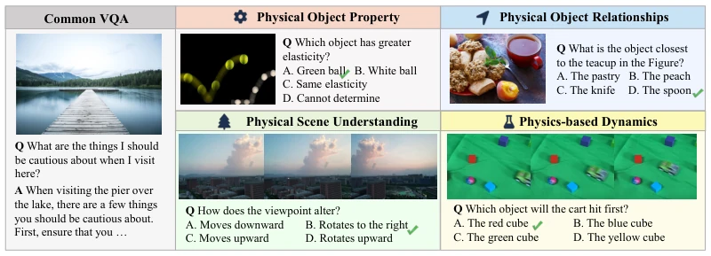
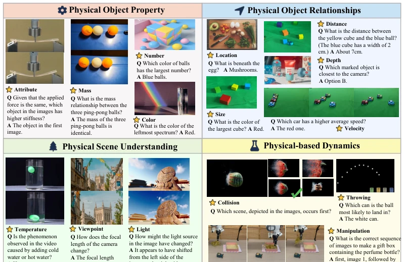
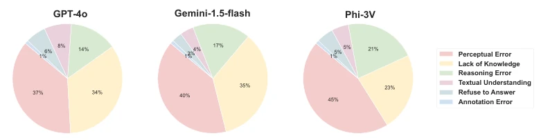
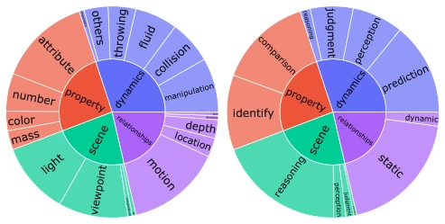
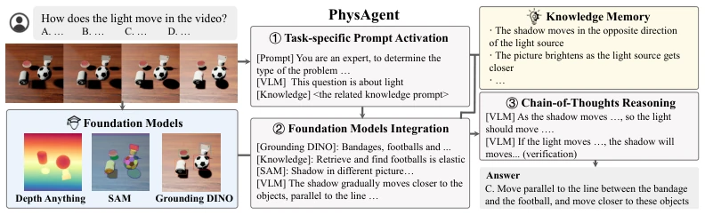
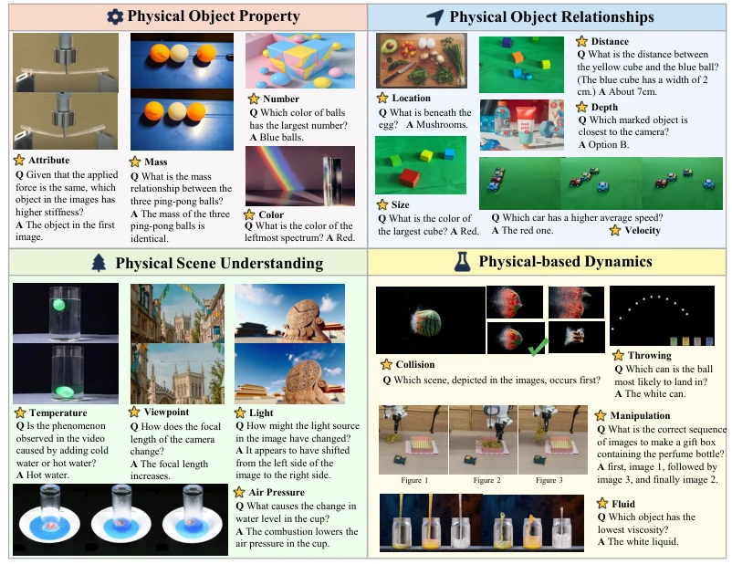
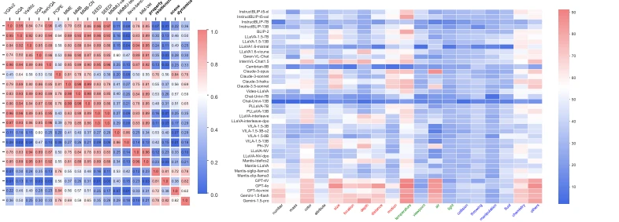
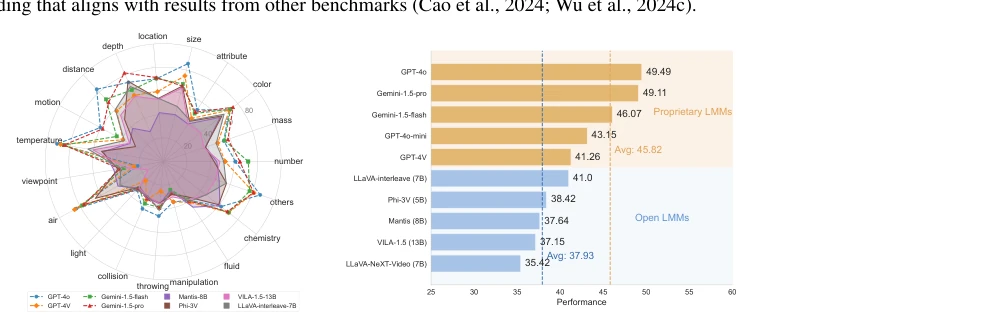
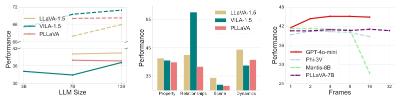
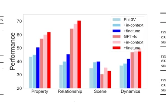

This paper casts a shadow over the "physical common sense" of VLMs. The PhysBench dataset reaches a scale of 10,000 items, covering physical attributes, relationships, scenes, and dynamics, but upon close examination of the questions, many still rely on common sense reasoning, with the proportion of true physical simulations being limited. Although PhysAgent improves GPT-4o by 18.4%, its essence is external tools (SAM, Depth Anything) + a knowledge base, and whether it constitutes an improvement in VLM endogenous capability is questionable. Open-source models perform miserably, while closed-source models rely on data accumulation, with the gap far exceeding architecture. However, mapping physical understanding to MOKA robot tasks is a highlight, at least proving that "understanding physics" is superior to "blind command," providing a new perspective for the deployment of embodied intelligence.
研究动机Motivation
具身智能需理解物理世界，但 VLM 常因缺乏物理先验导致操作失误（Liu et al., 2024a）。现有基准如 CLEVRER (Yi et al., 2019) 或 Physion (Bear et al., 2021) 多局限于仿真或简单几何，缺乏真实场景复杂性。VLM 在操作易碎物体或复杂动力学时易出错（Wang et al., 2023c; Guo et al., 2024）。作者指出训练数据缺乏物理知识是关键，需更全面评估弥合 VLM 与物理世界理解鸿沟，否则具身 Agent 难以安全部署。
Embodied intelligence requires understanding the physical world, but VLMs often lead to operational errors due to a lack of physical priors (Liu et al., 2024a). Existing benchmarks such as CLEVRER (Yi et al., 2019) or Physion (Bear et al., 2021) are mostly limited to simulations or simple geometry, lacking the complexity of real-world scenes. VLMs are prone to errors when manipulating fragile objects or complex dynamics (Wang et al., 2023c; Guo et al., 2024). The authors point out that the lack of physical knowledge in training data is critical; a more comprehensive evaluation is needed to bridge the gap between VLMs and physical world understanding, otherwise embodied Agents are difficult to deploy safely.

Figure 1: Common VQA tasks typically involve questions about visual content and general knowl- edge. PhysBench emphasizes understanding the physical world, encompassing 4 dimensions.
PhysBench is constructed through a 5-step process, with manual annotation of physical principles, containing interleaved video, images, and text. The PhysAgent framework is divided into three steps: first, activate task-specific prompts and call the physical knowledge base; second, integrate visual foundation models (Depth Anything, SAM, GroundingDINO) to enhance perception, addressing depth and distance calculation; finally, perform chain-of-thought reasoning and self-verification. The core innovation lies in decoupling the perception module from VLM reasoning, utilizing external tools to compensate for VLM shortcomings in numerical and spatial perception, while retaining VLM generalization capabilities. Unlike methods such as ContPhy that rely on predefined logic, PhysAgent supports open-ended questions, selectively calling physical rules through a knowledge memory module to achieve more flexible physical reasoning. For example, regarding lighting issues, the system retrieves the relationship between light source movement and shadow direction to assist VLM reasoning.

Figure 1 Figure 2 Figure 3

Figure 7: Distribution of error types for GPT-4V, Gemini-1.5-flash, Phi-3V.
Evaluated 75 VLMs; GPT-4o scored 49.49%, while open-source models were generally below 40%. Scale expansion (parameters, data, frames) had limited improvement on physical understanding, proving that data quality is more important than quantity. PhysAgent improved GPT-4o by 18.4%, especially in scene understanding. In MOKA robot experiments, both fine-tuning and PhysAgent improved grasp success rates, particularly in force control tasks. Error analysis shows that perception errors and knowledge gaps are the main causes. Additionally, closed-source models significantly outperform open-source models, indicating the importance of physical knowledge in training data.

Figure 3: Subtype distribution and ability distribution

Figure 8: Architecture of PhysAgent. PhysAgent employs a three-step reasoning process to address the problem: activating task-specific prompts, integrating foundation models, and reasoning.
其他图片Other Figures

Figure 2: Sampled PhysBench examples from four major dimensions mentioned in Section 3.1. Due to space constraints, we present only the correct answers (as each question in our dataset is a four- option multiple-choice with one correct answer) and defer additional examples to Appendix C.

Figure 4: (a) Correlation map between 4 tasks in PhysBench and 15 other vision-language bench- marks. (b) The visualization of model performance across 19 sub-tasks is presented, where different colors represent the respective categories. The four colors, from left to right, represent physical object property, physical object relationships, physical scene, and physical-based dynamics.

Figure 5: (a) The performance of 8 representative open-source General VLMs across 19 sub-tasks in PhysBench, which support interleaved inputs. The closer it is to the circular boundary, the better. (b) The overall performance of those 8 VLMs. Closed-source models generally perform better.

Figure 6: (a) Model size scalability. The solid line shows the average performance across 14 com- mon QA tasks (Table 23), while the dashed line represents PhysBench results. (b) Data scalability. VILA and PLLaVA expand upon LLaVA’s architecture by utilizing more data. (c) Frame scalability.

Figure 9: (a) Performance comparison of various methods. (b) Analysis of physical world knowl- edge transfer. (c) Performance evaluation across five embodied tasks as described in Figure 10.